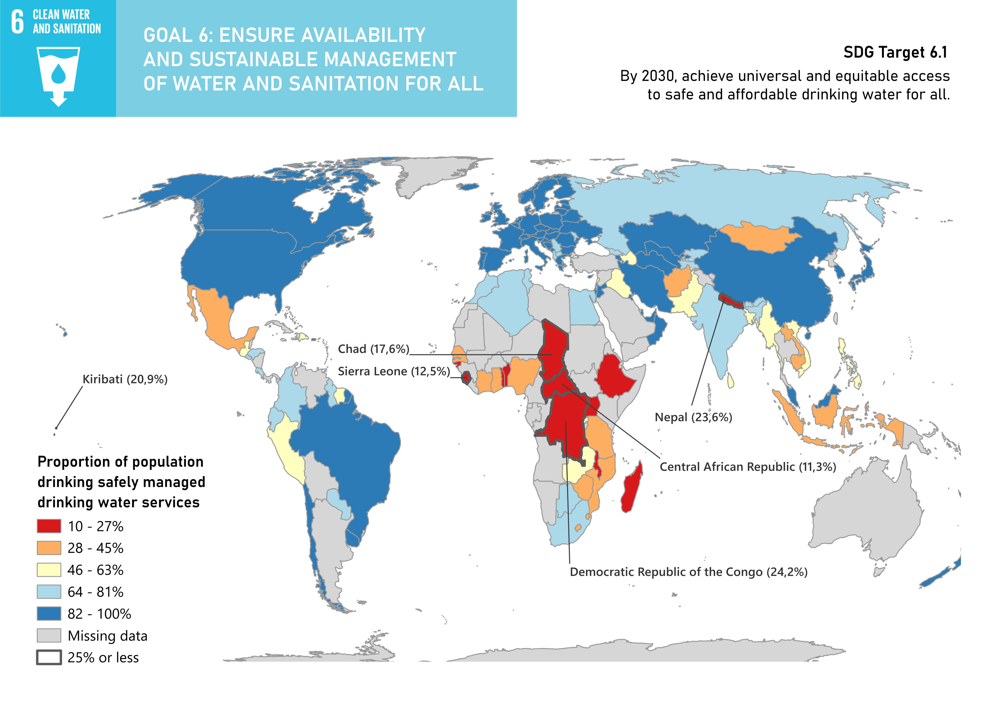
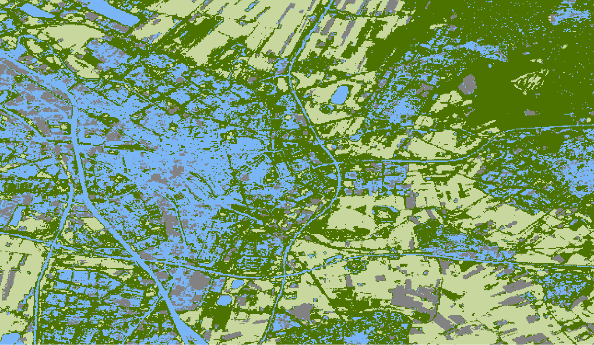
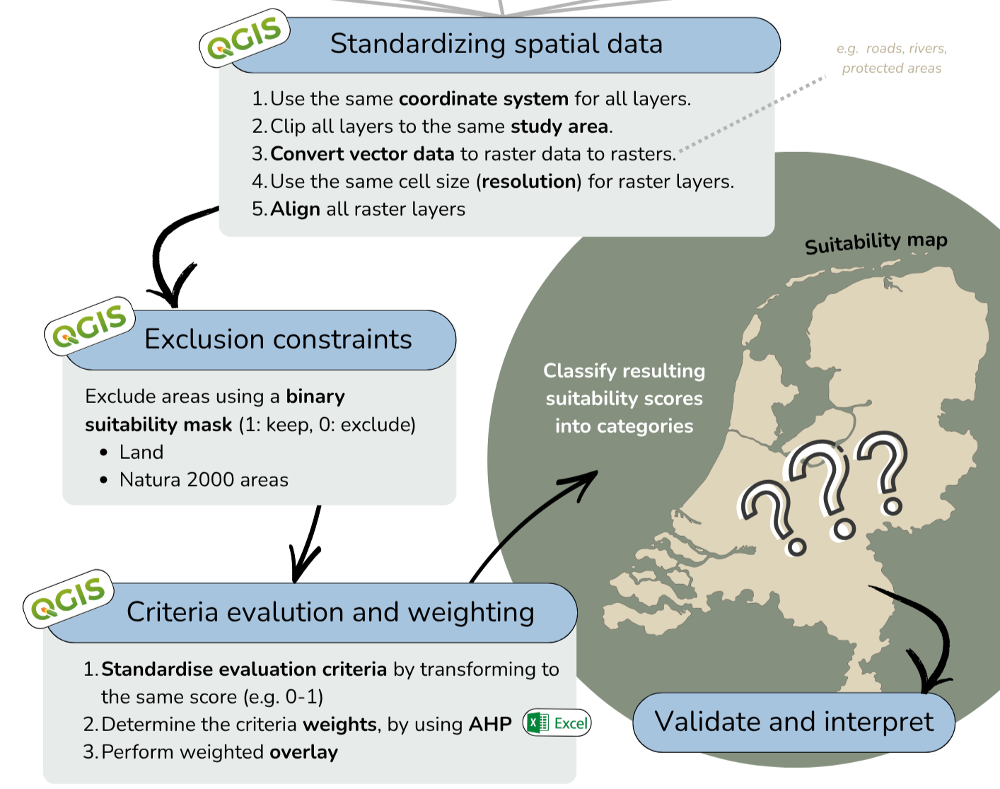

1. Choropleth Map
Ilustrating global access to safe drinking water services, using UN public data.

University College Utrecht
A portfolio of GIS projects performed during a UCU course, 2026.
Instructor: Britta Ricker, Course: UCSCIEESL5
Geographic Information Science (GIScience) is the theoretical and scientific foundation behind geographic data.
It studies how spatial data is collected, structured, analyzed, and interpreted, and thus answers questions about
spatial patterns.
Geographic Information Systems (GIS) are the practical tools and software used to apply GIScience.
GIS allows users to store, manage, visualize, and analyze spatial data through maps and models.
GIS allows us to solve complex problems by overlaying multiple layers of spatial data and analysing the their relationships.
Techniques for this include buffering, spatial interpolation, classification and, overlay analysis. GIS is specifically useful
as a tool due to its ability to combine vector data, such as points, lines, and polygons, with raster data, such as grids and sattelite images.
For example, GIS can be used in disaster management, for predicting flood risk using elevation data and hydrological models.
This course in Georgraphical Information Systems (GIS) introduced the principles and practical applications of spatial data analysis. Throughout the labs, I learned how to collect, process, analyze, and visualize geographic data. These skills are highly relevant today, as such analyses can be applied to complex challenges such as climate change and urban planning. Each assignment concerned a new GIS tool, concept or method, allowing me to develop a variety of skills.
My name is Malou Veen van Wolfswinkel and I am currently a second year student at University College Utrecht.
I am interested in the application of GIS and remote sensing techniques mostly for environmental analysis, as
this is my academic area of focus. I was born in Tarapoto (Peru) and grew up in the Hague (The Netherlands), so
I decided to focus on these regions for a few of the GIS projects. This course was a great opportunity to learn
about the many possibilities of GIS, and I am excited to show you my progress in this field so far.
Contact: malouveen@gmail.com
This portfolio showcases various projects and analyses I performed during a course in Georgraphical Information Systems.

Ilustrating global access to safe drinking water services, using UN public data.

Measuring the level of health of vegetation in the region of the Huallaga river in Peru, using cloudess orthomosaics.

Applying vector data analysis techniques to spatially visualize the accessibility of playground swings in the Hague, and the perception of greenness in Utrecht.

Classifying land cover in the region of the city of Utrecht, using three classification techniques.

Comparing the current elevation model of a section of the Rhine-Meuse delta to an old map from 1790, using public digital elevation models.

Conceptualizing the process of a Multi Criteria Analysis (MCA), by designing a MCA workflow for a suitability analysis of locations in the Netherlands for the installation of floating solar panels.